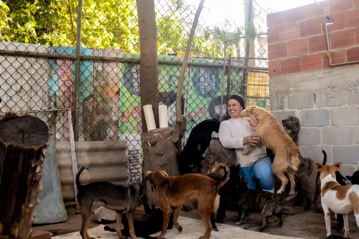
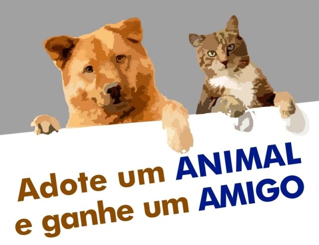

.png)
Quem Somos
Somos um projeto que conecta amantes dos animais, adotantes em potencial e ONGs por meio de um aplicativo simples e acessível. Nele, as organizações podem divulgar animais disponíveis para adoção, facilitando o encontro entre pets resgatados e pessoas dispostas a oferecer um novo lar.

O Que Fazemos
O Amigos de Rua é muito mais que um projeto social — é uma ponte entre animais em situação de rua e pessoas dispostas a ajudar. Além de alimentarmos e resgatarmos cães e gatos abandonados, promovemos campanhas de cuidados, castração e adoção responsável. Nosso maior diferencial é o aplicativo Amigos de Rua, onde ONGs e protetores independentes podem divulgar animais disponíveis para adoção. O app conecta quem precisa de ajuda com quem pode ajudar: pessoas encontram pets para adotar, fazem denúncias de maus-tratos e até oferecem lar temporário. Tudo isso de forma simples, rápida e acessível — porque salvar vidas nunca deveria ser complicado.
Adote um Amigo
Seu novo melhor amigo está esperando por você. Adote e transforme uma vida!
